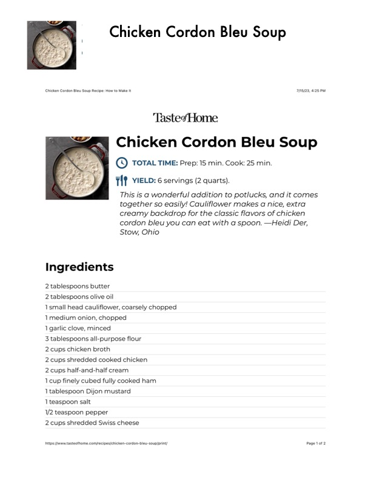

Chicken Cordon Bleu Soup

Original cookbook page 482
Ingredients
- 2 tablespoons butter
- 2 tablespoons olive oil
- 1small head cauliflower, coarsely chopped
- 1 medium onion, chopped
- 1 garlic clove, minced
- 3 tablespoons all-purpose flour
- 2 cups chicken broth
- 2 cups shredded cooked chicken
- 2 cups half-and-half cream
- 1 cup finely cubed fully cooked ham
- 1 tablespoon Dijon mustard
- ] teaspoon salt
- 1/2 teaspoon pepper
- 2 cups shredded Swiss cheese
Instructions
- This is a wonderful addition to potlucks, and it comes together so easily!
- 1small head cauliflower, coarsely chopped 1 medium onion, chopped
- 1 cup finely cubed fully cooked ham 1 tablespoon Dijon mustard
Recipe #482 from collection